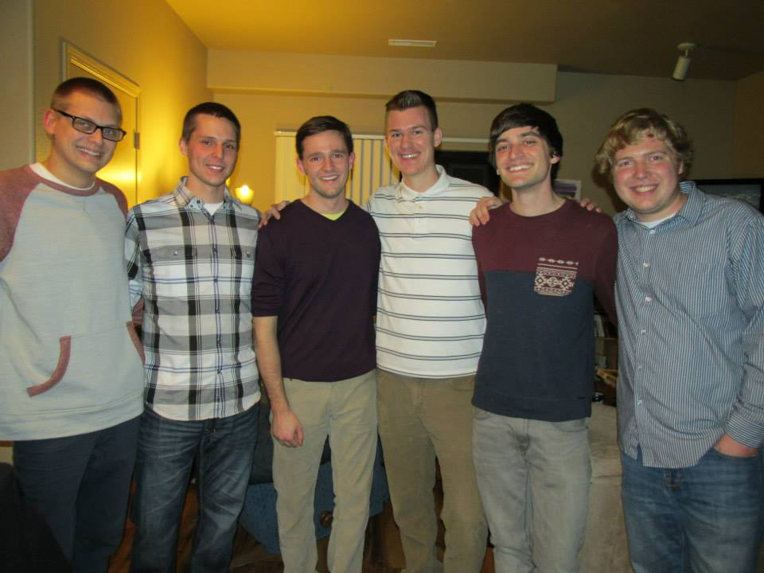
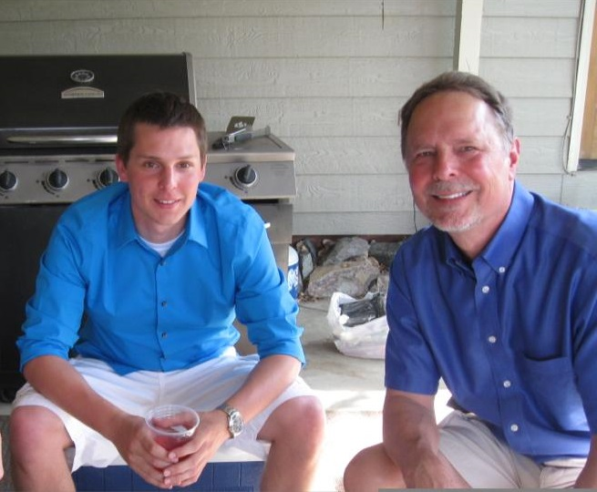
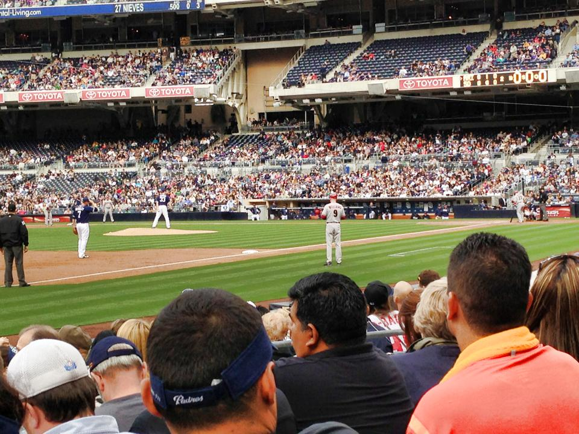
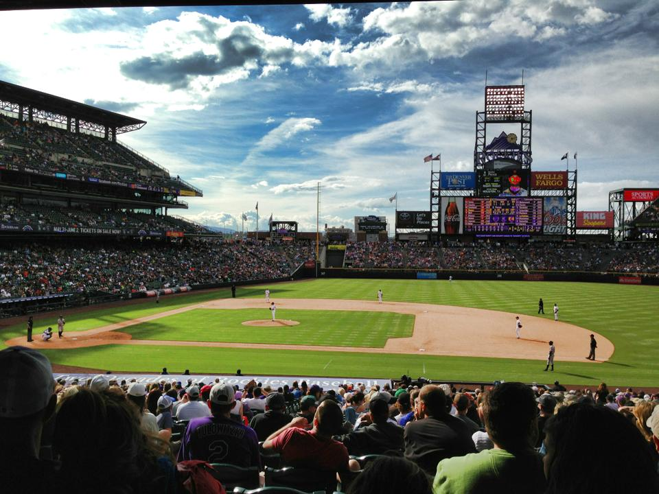
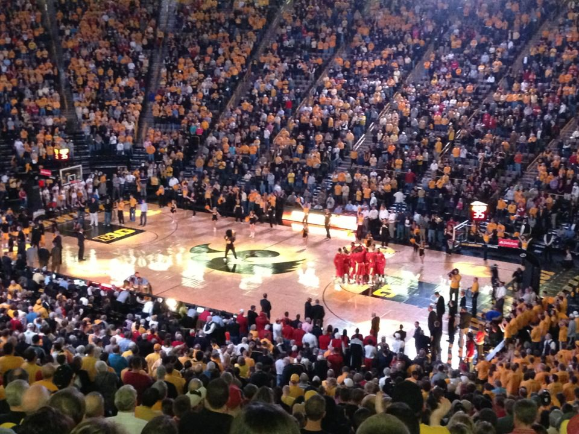
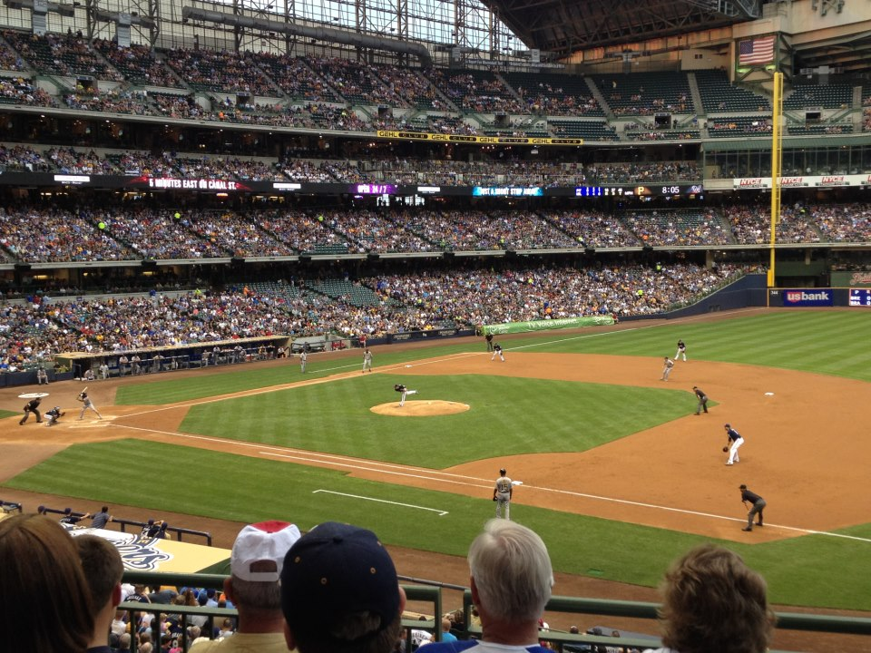
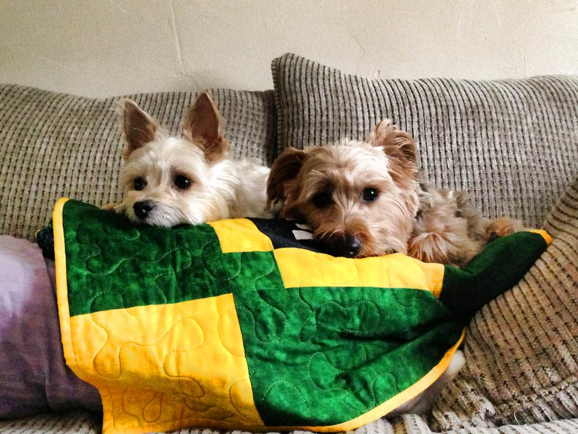
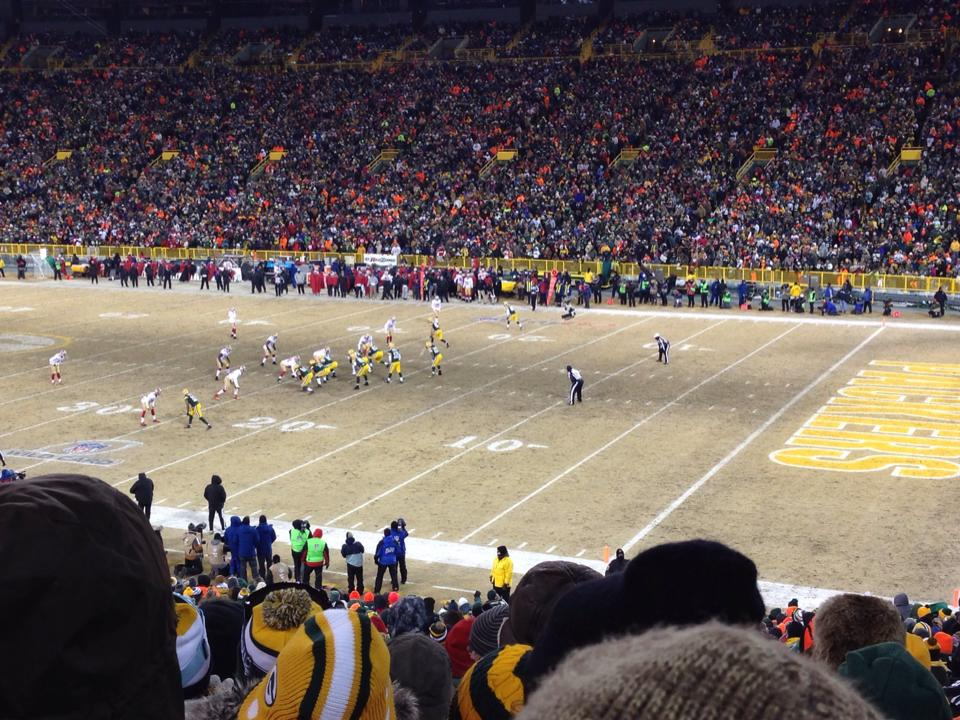

Ryan Lipp

Some of my good friends
Some of my good friends

My dad and I
My dad and I
About Me
I am a fifth year senior in the Tippie College of Business. I will finally be graduating this May with a triple major in Accounting, MIS, and Finance. I will then proceed to continue studying as I attempt to take the CPA exam over the summer. Next Fall I will be moving to Minneapolis where I have accepted a job with Ernst and Young in the Risk Advisory practice. I will be traveling a majority of the time for my job, which I am excited for! Although I decided against moving somewhere warmer and bigger, I am more than excited to finally get out of Iowa.
I have lived in Iowa my entire life (originally from Cedar Rapids). While I was a freshman here at Iowa, my parents decided to move out to Denver, Colorado and leave me stuck here in Iowa. I am the second, and last, of two...so my parents wasted no time after I left home! My sister is now also living out in Denver, CO and just graduated from law school last year. She is married and has two of the cutest puppies you'll ever see!
In the small of amount of spare time I have with my school schedule and the many other events I partake in, I decided to work at McGladrey part-time during this tax season. I prefer to stay busy, but this last semester of school will definitely be a challenge. I am a very easy-going person and love to be around other people. On the weekends you can catch me hanging out with friends, outside (if it's nice), at the rec center, or downtown at night.
I have lived in Iowa my entire life (originally from Cedar Rapids). While I was a freshman here at Iowa, my parents decided to move out to Denver, Colorado and leave me stuck here in Iowa. I am the second, and last, of two...so my parents wasted no time after I left home! My sister is now also living out in Denver, CO and just graduated from law school last year. She is married and has two of the cutest puppies you'll ever see!
In the small of amount of spare time I have with my school schedule and the many other events I partake in, I decided to work at McGladrey part-time during this tax season. I prefer to stay busy, but this last semester of school will definitely be a challenge. I am a very easy-going person and love to be around other people. On the weekends you can catch me hanging out with friends, outside (if it's nice), at the rec center, or downtown at night.
Some of my Favorite Things:
Sports to Play:
- Basketball, baseball, football, golf
Sports Teams:
- Atlanta Braves, San Diego Chargers, Sacramento Kings, Iowa Hawkeyes
TV Shows:
- Modern Family, Suits, The Mentalist, Breaking Bad
Movies:
- White Men Can't Jump, Super Troopers, The Breakfast Club, The Sandlot, Caddyshack
Hobbies:
- Traveling, attending sporting events, running, playing basketball and softball, card games
Short-Term Bucket List:
- Go to every MLB stadium (currently at 15), live overseas for a while, run a marathon

Padres game
Padres game

Rockies game
Rockies game

Iowa Hawkeyes Basketball Game
Iowa Hawkeyes Basketball Game

Brewers game
Brewers game

My sister's dogs: Bella and Moby
My sister's dogs: Bella and Moby

At the freezing cold 49ers-Packers game
At the freezing cold 49ers-Packers game